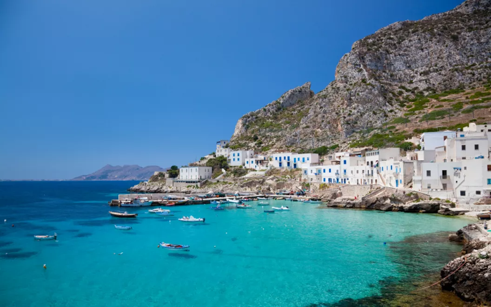

Comparada con otras islas que he visitado, sin duda Sicilia no es pequeña. Situada en el mar
Mediterráneo, la podemos ubicar en el mapamundi como la bota de Italia.
Sus ciudades y pueblos tienen otro color, otro olor... Los colores azules de sus aguas, muchas de ellas cristalinas,
hacen que te transportes a playas de ensueño. Reservas Naturales como la de Vendiccari, las ruinas
de sus templos y su arquitectura hacen que puedas rememorar su gran historia, además de poder
disfrutar del volcán más activo de Europa: el Etna.
Si quieres salir de la isla, puedes visitar sus pequeñas Islas Eólicas; la que más te sonará será Estrómboli y su
volcán.
La gastronomía que podemos disfrutar sobre todo es el pescado y marisco recién cogidos de sus aguas
y preparados con mucho mimo en muchos de sus restaurantes. También podemos degustar sus famosos 'aranccinis' y sus
deliciosos 'cannoli'.
¿Me acompañas a visitarla?
¿Qué podemos visitar en ésta isla?
Sicilia tiene una gran riqueza arquitectónica mires donde mires. En cada ciudad o pueblo tienes algo con lo que
quedarte boquiabierto.
A continuación os dejo el Top 4 de los lugares que más me gustaron:
Valle de los Templos en Agrigento
Catedral de Palermo
El Teatro Antico de Taormina
Volcán Etna
Pero también hay lugares preciosos como Ortigia, el precioso pueblo pesquero de Cefalú, las calles de Catania, el
acantilado de la Scala dei Turchi, una de las playas más famosas San Vito lo Capo...
Teatro Antico de Taormina

Teatro Antico de Taormina
Echemos un vistazo a nuestro viaje
Para amenizar un poco éste artículo, hicimos un vídeo resumen para que podáis ver mejor cada rincón de ésta
preciosa
isla.
Si tienes dudas ó quieres que te cuente más sobre ello, puedes enviarme un email.
Recomendaciones de alojamiento y dónde comer
Una de las preguntas que siempre me hacéis es dónde alojarse y dónde comer.
Al ser una isla de un tamaño
considerable, os recomiendo alojaros en diferentes zonas. Nosotros nos alojamos en Catania para ver la zona este de
la isla, en Palermo para poder movernos por la parte norte y centro; y finalmente en Agrigento para poder ver la
parte sur.
De ésta manera no pasaréis largas horas en el coche recorriendo la isla de punta a punta.
Alojamientos
Ciudad
Hoteles
Precios
Palermo
Ballaro' Hotel - Budget Room
Hab. doble/noche = 132€
Catania
Tulip b&b
Hab. doble/noche = 94€
Agrigento
Cortile Baronello
Hab. doble/noche = 87€
Restaurantes
En cuanto a la hora de ir a comer, os dejo mi restaurante favorita de cada una de las ciudades en las que nos
alojamos.
Como siempre, hay muchas opciones incluso nosotros nos hicimos sandwich para alguno de los días en los que
disfrutamos de las playas, el aire libre...
Si te gusta lo que te cuento de mis viajes y quieres que te lleguen notificaciones sobre el próximo post, ideas para
viajar ó el próximo viaje que voy a realizar; tan sólo tienes que rellenar el siguiente formulario: